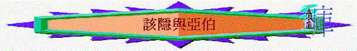

經文:創4:1-15
引言(創4:1-2)
創4:1提及那人指誰? 他生了誰?誰是兄?誰是弟? 你在家中有幾多位兄弟姊妹?你認為兄弟之間應要怎樣相處? 該隱與亞伯又如何?我們試從聖經看一看,也成為我們與人相處的提醒與鑑戒
一.不同的人生(4:1-4)
1. 4:2提及該隱與亞伯的職業是什麼? 你有沒有想過將來想作什麼職業?
2. 4:3 提及供物,何謂供物?(禮物) 今天我們可以獻上什麼供物給神? 當時他們的供物是什麼?
3.該隱的職業是種地的,他的職業可幫到他什麼事情? (生活/可食) 亞伯又如何? 當時的人主要食什麼?(不食肉的) 牧羊有什麼功用? 亞伯為何選上這職業?(為奉獻) 有什麼地方值得我們欣賞?
4.你有沒有想過將來的職業是可以事奉神的? 又如何事奉神?
二.不同的行為(4:5-7)
1.結果神看中那位的供物?
2.若留意4:7---神的回應,神為何看重亞伯卻不看重該隱的供物? 因他行得不好
3.若用今日的角度去看,若一個人對主有很多奉獻,他也在團契中有很多事奉,但神在什麼情況下會不看中及不悅納他的擺上?
4.若今天導師選你作2014年的團契職員,你會如何改善你的行為,以致神可悅納你的事奉?試分享
三.謀殺的開始(4:5-8)
1.神不看中該隱的供物,他的反應是什麼?
2.他為何發怒? 約壹3:12-13,15怎樣補充他發怒的原因? 不抵得,比較,嫉妒
3.有沒有認識一些朋友/同事/親人常存「恨」的心？ 「恨」甚麼？
4.神對他有什麼提醒? 他有沒有聽?
5. 4:8 又有什麼恐怖的地方?該隱不需要人教，但懂發怒、嫉妒、詭詐、惡計、並流人血。連自己兄弟也殺
6.原來一個人不對付自己的惱恨, 可以產生更大的罪! 今天在你的生活中,有沒有一些人你不喜歡或惱恨他?
四.頑梗的回應(4:9-15)
1.神是否知道該隱殺了亞伯? 4:9神怎樣說? 祂為何這樣問該隱而不直接先指出該隱的罪行? 給他機會坦白認錯
2.你若是該隱,你會怎樣答4:9神的問題
3.該隱怎樣回應? 他的回應有什麼問題?
4.若我們今天暗中犯錯,我們應該要怎樣作才合神心意?約壹1:9-10
5.神有沒有向該隱彰顯公義? 何以見得? 該隱有什麼報應?
6.神對他又有什麼恩典?
7.試分享你在家中犯錯後家人仍對你有恩典的經歷? 神比我們的父母更有恩典,祂是會管教,在管教中仍對人有恩!